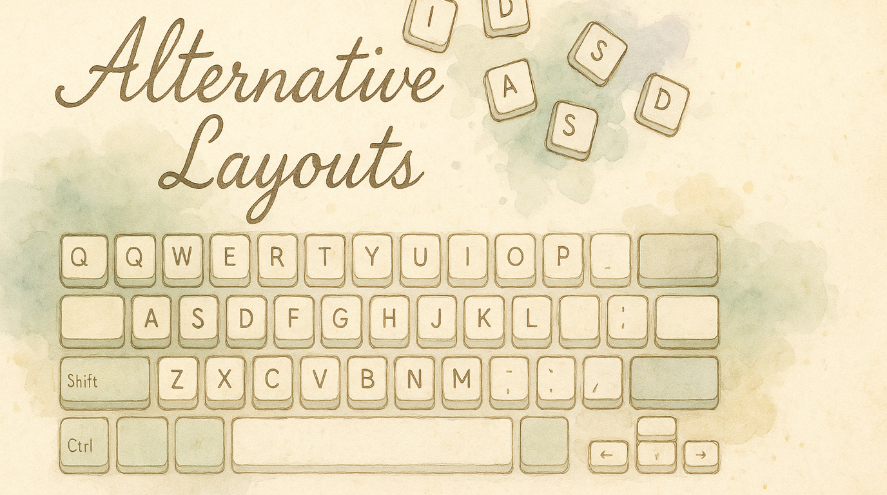
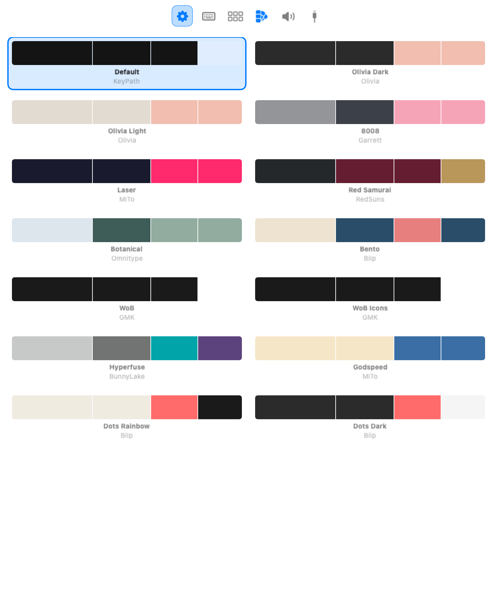
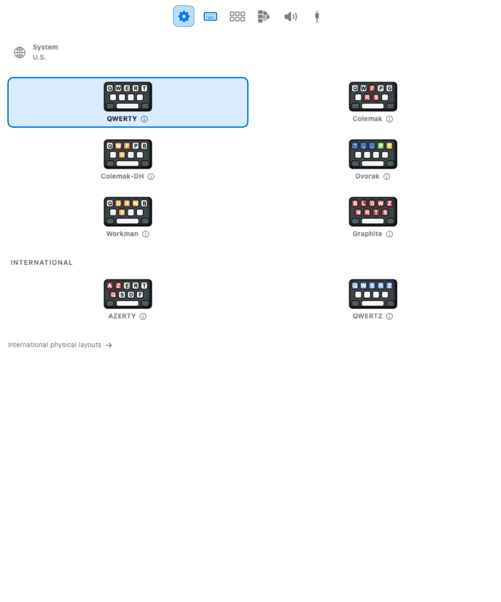

Most people type on QWERTY — a layout designed in the 1870s to prevent typewriter jams, not for comfort or speed. Alternative layouts rearrange the keys to put the most-used letters on the home row, reduce finger travel, and promote comfortable typing patterns.
KeyPath supports 8 keymaps out of the box, and its keyboard overlay updates instantly when you switch — so you can see the new layout right on your screen while you learn.
The case for an alternative layout comes down to ergonomics:
QWERTY home row: Colemak home row:
┌───┬───┬───┬───┬───┐ ┌───┬───┬───┬───┬───┐
│ A │ S │ D │ F │ G │ │ A │ R │ S │ T │ D │
└───┴───┴───┴───┴───┘ └───┴───┴───┴───┴───┘
↑ ↑
32% of English on 74% of English on
the home row the home rowOn QWERTY, your fingers leave the home row for most letters. On an ergonomic layout like Colemak or Dvorak, the most frequent letters are right under your fingertips. Less reaching means less strain, especially over long typing sessions.
That said, switching layouts is a commitment — expect weeks of slower typing before you regain speed. Many people find it worthwhile; others prefer to stay on QWERTY and use Shortcuts Without Reaching or a Hyper key instead.
The most popular QWERTY alternative. Moves 17 keys but keeps many common shortcuts (Z, X, C, V) in their QWERTY positions.
┌───┬───┬───┬───┬───┬───┬───┬───┬───┬───┐
│ Q │ W │ F │ P │ G │ J │ L │ U │ Y │ ; │
├───┼───┼───┼───┼───┼───┼───┼───┼───┼───┤
│ A │ R │ S │ T │ D │ H │ N │ E │ I │ O │ ← home row
├───┼───┼───┼───┼───┼───┼───┼───┼───┼───┤
│ Z │ X │ C │ V │ B │ K │ M │ , │ . │ / │
└───┴───┴───┴───┴───┴───┴───┴───┴───┴───┘Best for: People who want better ergonomics but don't want to relearn every shortcut. Cut/Copy/Paste stay in the same spot.
A modern refinement of Colemak that moves D and H off the center column to reduce lateral finger stretches — especially useful on columnar and split keyboards.
┌───┬───┬───┬───┬───┬───┬───┬───┬───┬───┐
│ Q │ W │ F │ P │ B │ J │ L │ U │ Y │ ; │
├───┼───┼───┼───┼───┼───┼───┼───┼───┼───┤
│ A │ R │ S │ T │ G │ M │ N │ E │ I │ O │ ← home row
├───┼───┼───┼───┼───┼───┼───┼───┼───┼───┤
│ Z │ X │ C │ D │ V │ K │ H │ , │ . │ / │
└───┴───┴───┴───┴───┴───┴───┴───┴───┴───┘Best for: Split and columnar keyboard users. If you own a Corne, Sofle, or Kinesis, this is a strong choice.
The classic alternative layout, designed in the 1930s. Emphasizes hand alternation and puts all vowels on the left home row.
┌───┬───┬───┬───┬───┬───┬───┬───┬───┬───┐
│ ' │ , │ . │ P │ Y │ F │ G │ C │ R │ L │
├───┼───┼───┼───┼───┼───┼───┼───┼───┼───┤
│ A │ O │ E │ U │ I │ D │ H │ T │ N │ S │ ← home row
├───┼───┼───┼───┼───┼───┼───┼───┼───┼───┤
│ ; │ Q │ J │ K │ X │ B │ M │ W │ V │ Z │
└───┴───┴───┴───┴───┴───┴───┴───┴───┴───┘Best for: People who want maximum home row usage and don't mind relearning all shortcuts. Dvorak is built into every operating system.
Designed to reduce lateral finger movement and prioritize comfortable key positions based on actual finger mechanics, not just distance.
┌───┬───┬───┬───┬───┬───┬───┬───┬───┬───┐
│ Q │ D │ R │ W │ B │ J │ F │ U │ P │ ; │
├───┼───┼───┼───┼───┼───┼───┼───┼───┼───┤
│ A │ S │ H │ T │ G │ Y │ N │ E │ O │ I │ ← home row
├───┼───┼───┼───┼───┼───┼───┼───┼───┼───┤
│ Z │ X │ M │ C │ V │ K │ L │ , │ . │ / │
└───┴───┴───┴───┴───┴───┴───┴───┴───┴───┘Best for: People who find Colemak's same-hand sequences uncomfortable and want a layout that feels natural for extended typing.
A newer layout optimized for low finger travel with 65% home row usage and balanced hand distribution.
┌───┬───┬───┬───┬───┬───┬───┬───┬───┬───┐
│ B │ L │ D │ W │ Z │ Y │ O │ U │ J │ ; │
├───┼───┼───┼───┼───┼───┼───┼───┼───┼───┤
│ N │ R │ T │ S │ G │ P │ H │ A │ E │ I │ ← home row
├───┼───┼───┼───┼───┼───┼───┼───┼───┼───┤
│ Q │ X │ M │ C │ V │ K │ F │ , │ . │ / │
└───┴───┴───┴───┴───┴───┴───┴───┴───┴───┘Best for: People who want cutting-edge optimization and are comfortable with a layout that doesn't prioritize QWERTY shortcut compatibility.
The standard French keyboard layout, used in France and Belgium. Swaps A/Q and Z/W from QWERTY and moves M to the home row.
┌───┬───┬───┬───┬───┬───┬───┬───┬───┬───┐
│ A │ Z │ E │ R │ T │ Y │ U │ I │ O │ P │
├───┼───┼───┼───┼───┼───┼───┼───┼───┼───┤
│ Q │ S │ D │ F │ G │ H │ J │ K │ L │ M │ ← home row
├───┼───┼───┼───┼───┼───┼───┼───┼───┼───┤
│ W │ X │ C │ V │ B │ N │ , │ ; │ : │ ! │
└───┴───┴───┴───┴───┴───┴───┴───┴───┴───┘Best for: French-speaking users who need the standard national layout displayed in KeyPath's overlay.
The standard German keyboard layout, also used across Central Europe. The main difference from QWERTY is swapped Y and Z keys.
┌───┬───┬───┬───┬───┬───┬───┬───┬───┬───┐
│ Q │ W │ E │ R │ T │ Z │ U │ I │ O │ P │
├───┼───┼───┼───┼───┼───┼───┼───┼───┼───┤
│ A │ S │ D │ F │ G │ H │ J │ K │ L │ ö │ ← home row
├───┼───┼───┼───┼───┼───┼───┼───┼───┼───┤
│ Y │ X │ C │ V │ B │ N │ M │ , │ . │ - │
└───┴───┴───┴───┴───┴───┴───┴───┴───┴───┘Best for: German-speaking users who want the correct national layout in KeyPath's overlay.
Changing your keyboard overlay to a different layout takes two clicks:

Screenshot — Settings toolbar (after clicking the gear): ┌─────────────────────────────────────────────────────┐
│ │
│ [ Keymap ] [ Layout ] [ Keycaps ] [ Sounds ] │
│ ^^^^^^^ │
│ selected │
└─────────────────────────────────────────────────────┘
Screenshot — Keymap picker (2-column grid of layout cards): ┌─────────────────────────────────────────────────────┐
│ Keymap │
│ │
│ ┌──────────────┐ ┌──────────────┐ │
│ │ ▣ QWERTY │ │ Dvorak │ │
│ │ (selected) │ │ │ │
│ └──────────────┘ └──────────────┘ │
│ ┌──────────────┐ ┌──────────────┐ │
│ │ Colemak │ │ Colemak-DH │ │
│ │ │ │ │ │
│ └──────────────┘ └──────────────┘ │
│ ┌──────────────┐ ┌──────────────┐ │
│ │ Workman │ │ Graphite │ │
│ │ │ │ │ │
│ └──────────────┘ └──────────────┘ │
│ │
│ INTERNATIONAL │
│ ┌──────────────┐ ┌──────────────┐ │
│ │ AZERTY │ │ QWERTZ │ │
│ └──────────────┘ └──────────────┘ │
└─────────────────────────────────────────────────────┘KeyPath doesn't change your operating system's input method. The overlay's geometry follows your selected physical keyboard layout, and its labels follow your selected keymap. Driverless rules use physical key positions; the characters your apps receive also depend on the macOS input source and any input method. Changing the overlay alone does not verify an OS layout or IME combination.
Tip: If you're learning a new layout, keep the KeyPath overlay visible on your desktop as a cheat sheet. As you build muscle memory, you'll glance at it less.